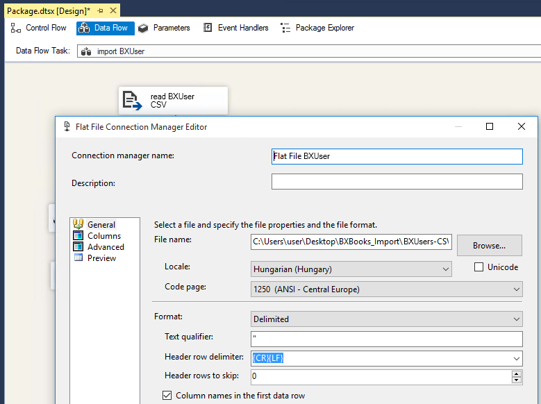
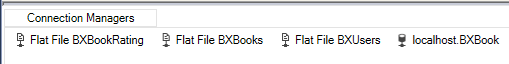
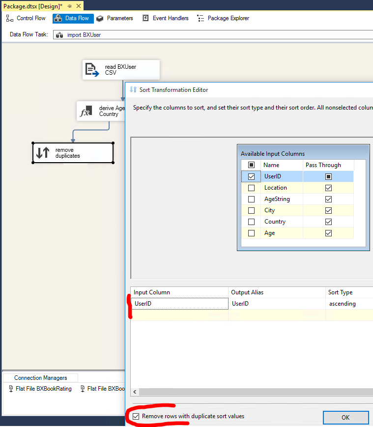
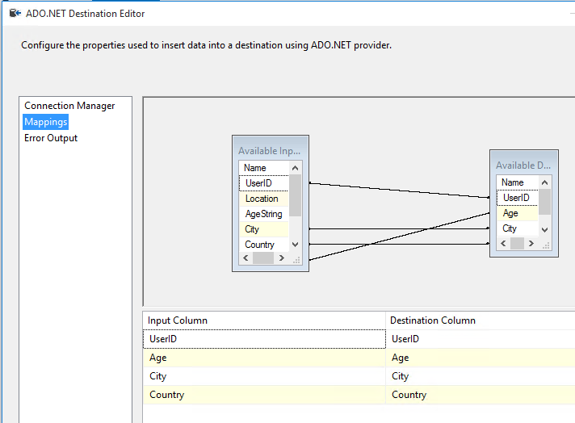

Exercise 3: Import the users dataset using Integration Services¶
Extend the provided Integration Services project ex3.sln by modifying the project contents in place. You can find this solution in the root of the checked out git repository.
-
Open the solution with Visual Studio, then open
Package.dtsxfrom Solution explorer.
-
Find the SSIS Toolbox; you will need to use this window in the following tasks.
If you cannot see this toolbox window, after opening
Package.dtsx, look for the Extensions > SSIS > SSIS Toolbox menu. -
Add a new SQL Task to the Control flow that erases any content from the target database table. You will likely need to run the ETL process multiple times, but the data should only be imported once; hence the initial cleanup task.
- Drag the SQL Task from the toolbox.
- Double click to open the details.
- Specify the connection settings:
- Use
ADO.NETconnection type. - Add a new connection using the dropdown. This will open a new dialog, where you need to click on the New button again to add a new connection. Use the same connection settings (address and authentication) as before. When you configured the connection properties, make sure to press the Test button to verify the settings.
- Use
- Specify a
truncate table <tablename>sql statement to prune the table contents. The sql command should NOT contain the database name; that is already configured in the connection manager.

-
Add a new Data flow element to the control flow pane. Give a meaningful name to this task: "import users". This task should follow the previous cleanup task: draw a line from the previous task box to this one to specify the ordering.
Your control flow should like like the following at this moment.

-
Open the data flow element by double clicking it.
-
Drag a Flat file source from the toolbox to the data flow pane. Double click to open in. Add a new Flat file connection manager that specifies the source file and its details.
- Browse the input file
BX-Users.csvfrom your local disk. -
Set the correct Format for parsing
- Format: Delimited
- Text qualifier: specify " (double quotation mark)
- Check "Column names in the first data row"

-
Switch to the Columns page (within the dialog)
- Verify that the Row delimiter is
{CR}{LF}and the Column delimiter is semicolon.
- Verify that the Row delimiter is
- Switch to the Advanced page (within the dialog)
- Verify that the correct number of columns is present
- Change the UserID to be parsed as
four byte signed integer - Although the age should be a number, it must be parsed as a string here, because there are values in the CSV with the literal
NULLtext - Increase the length (OutputColumnWidth) of the Location column from 50 to 1.000
- The preview pane is a good way to verify the results. Make sure that there are no lingering quotation marks in the values (if there are, you missed to specify the text qualifier before).
-
Close the dialog. If you need to modify the settings, you will find this Connection manager at the bottom of the designer surface.

- Browse the input file
-
In order to split the Location column into two, and to parse the Age as a number, add a Derived column transformation (drag one from the SSIS Toolbox pane to the data flow editor surface). Connect the blue output of the file source to into this new box to specify the data flow direction (see image below for reference). Then open the settings of the Derived column element to specify how the derived values are calculated.
- Add a new column that contains the age as an integer. Check if the string is "NULL", in that case keep the null value, or cast to int.
- Use the following expression:
[Age] == "NULL" ? NULL(DT_I4) : (DT_I4)[Age]. (You may need to change the column names.)
- Use the following expression:
- Split the location column into two, and include your Neptun code in the text: create a new City and a new Country column using string operations; Country should be prefixed with your neptun code.
- Take a look at a few examples of the Location: they are in the form of "city, state, country"
- To separate the country find the second comma in the text. The rest is the city (you can keep the state included in the city text). Prefix the country with your Neptun code by concatenating it as a string to the front. E.g. "nyc, new york, usa" becomes:
- Country: "NEPTUN usa"
- City: "nyc, new york"
-
Find more information on the syntax of the Expression here: https://docs.microsoft.com/en-us/sql/integration-services/expressions/integration-services-ssis-expressions?view=sql-server-2017)

- Add a new column that contains the age as an integer. Check if the string is "NULL", in that case keep the null value, or cast to int.
-
Remove duplicate records. Add a new Sort transformation, then connect it to the output of the previous element. Open its settings: chose to sort on the UserID, and check the Remove rows with duplicate sort values checkbox.

-
Add an ADO NET Destination component (look in the Other Destinations category) to save the data into database.
- Direct the output of the previous Sort component here.
- Open the component settings dialog by double clicking the component box.
- Use the connection manager created before. (Make sure not to create a new connection manager - the database access has already been defined in the existing connection manager.)
-
Select the users table you created as target.

-
Check the mapping and make sure that the right fields go into the right columns. Make sure to double check the Age column because it may exist as a number and as a string too; you need the numbered type here. (Mind, that the input column names may be different for you.)

-
If you were to execute the process now, it would fail due to errors in the Derived columns transformation. Some content does not correspond to the transformations. Let us skip these rows.
- Add another ADO NET Destination component.
-
Point the red arrow from the Derived column into this new database destination.

-
A the Configure Error Output dialog will pop up to specify how to handle errors. For all columns and error types select Redirect row. There is a total number of 6 elements to change here. Close this dialog.

-
Open the new ADO NET Destination and specify its settings too.
- Although the result of the transformations are not available, we still save the UserId value. The other database columns will not have any mapping. So effectively only the UserID will be saved to database.
- Use the connection manager created before. (Make sure not to create a new connection manager - the database access has already been defined in the existing connection manager.)

-
Run the ETL process by using the Start button on the toolbar of Visual Studio.
Verify that the execution succeeded. If not, see this guide for debugging and resolving typical issues.
-
If the process succeeded, verify the contents of the table using SQL Server Management Studio. Verify that you added your Neptun code prefix to the Country names.
There will be a few rows with
NULLvalues, these are the records that failed the Derived column transformation. Check whether the failure were justified (the problem is indeed with the input), or whether the error is in your ETL process!
SUBMISSION
Then create a screenshot of the table contents. Save the screenshot file as ex3.png - overwrite the placeholder file with yours.
Please make sure that the screenshot is taken such that it includes the database name (which is your Neptun code) from the Object explorer window, and includes a few sample records with the Neptun code clearly visible.